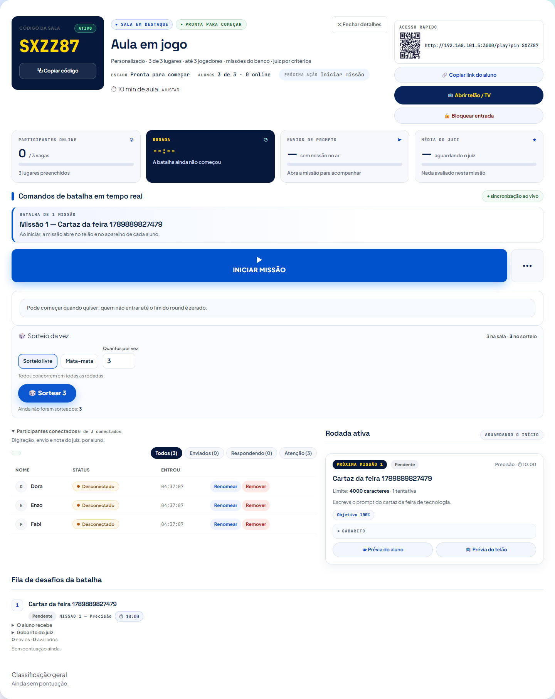
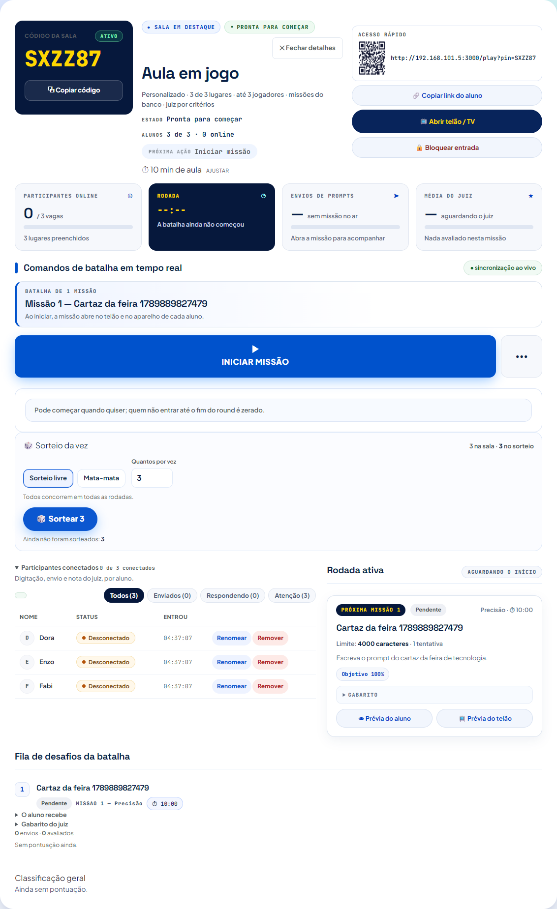
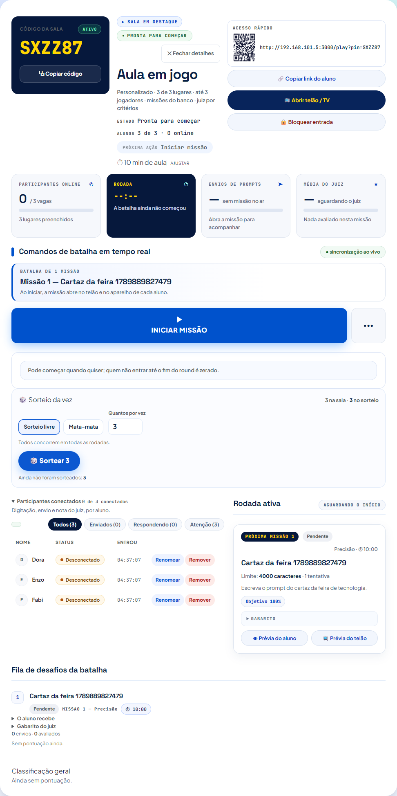
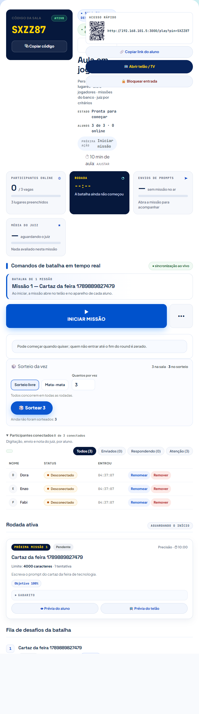
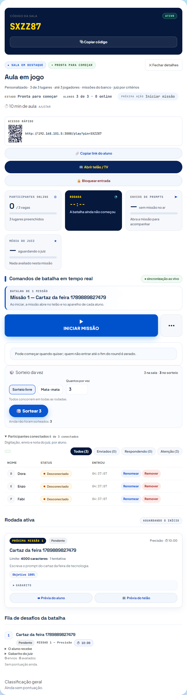

A sala inteira, e não só o topo do painel: a organização desta rodada mora
abaixo da dobra (as duas colunas e a fila de desafios). A foto sobe a
viewport do navegador só para caber a sala toda — a medida de rolagem
horizontal é feita antes dela, na janela de verdade, e em nenhuma das seis
larguras a página rola para o lado.
1920×1080 — a sala na coluna de 1440 px (antes: 1080, com um terço da tela vazio dos dois lados)

1440×900 — duas colunas: participantes (58%) e rodada ativa (42%)

1280×720 — ainda duas colunas

1024×768 — as colunas empilham

768×1024 — coluna única, cartão com 24 px de respiro

390×844 — a ordem do plano: código, título, ações, métricas, comandos, participantes, rodada, fila